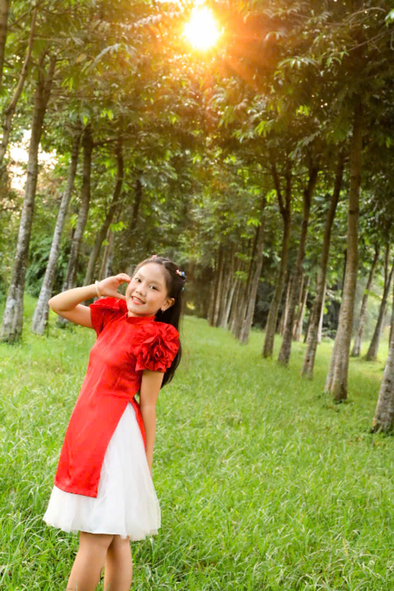
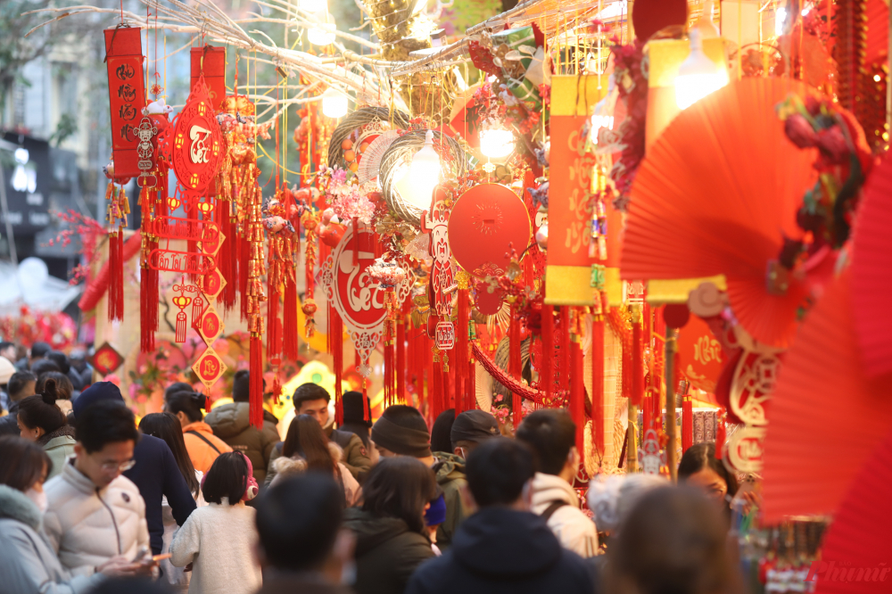
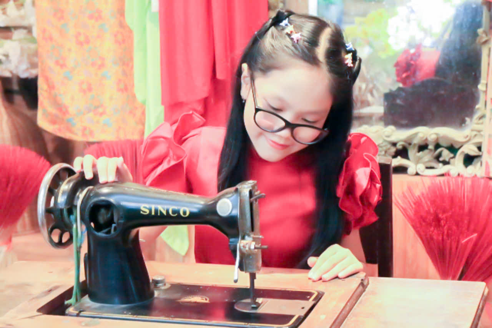
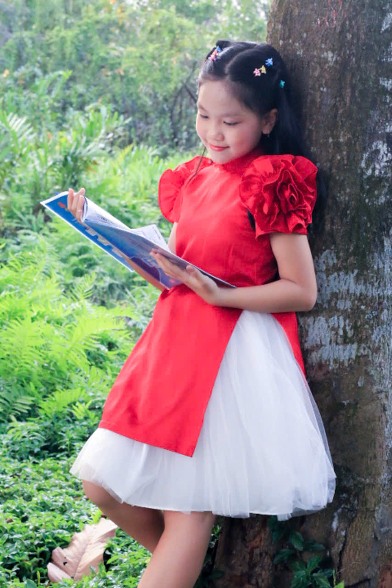

Học Tiếng Anh: Chủ Đề Ngày Lễ (Holidays)
Học qua câu hỏi, phiên âm và hình ảnh minh họa

Q: Do you usually travel during long holidays?
/duː juː ˈjuːʒuəli ˈtræv.əl ˈdjʊr.ɪŋ lɔːŋ ˈhɑː.lə.deɪz/
→ Bạn có thường đi du lịch trong các kỳ nghỉ dài không?
A: Yes, I like traveling to relax and explore new places.
/jes, aɪ laɪk ˈtræv.əl.ɪŋ tuː rɪˈlæks ænd ɪkˈsplɔːr nuː ˈpleɪ.sɪz/
→ Có, tôi thích đi du lịch để thư giãn và khám phá những nơi mới.

Q: Which holiday do children enjoy the most in your country?
/wɪtʃ ˈhɑː.lə.deɪ duː ˈtʃɪl.drən ɪnˈdʒɔɪ ðə moʊst ɪn jʊr ˈkʌn.tri/
→ Trẻ em ở nước bạn thích ngày lễ nào nhất?
A: Most children enjoy the summer holiday.
/moʊst ˈtʃɪl.drən ɪnˈdʒɔɪ ðə ˈsʌm.ɚ ˈhɑː.lə.deɪ/
→ Hầu hết trẻ em thích kỳ nghỉ hè.

Q: Do holidays make people happier?
/duː ˈhɑː.lə.deɪz meɪk ˈpiː.pəl ˈhæp.i.ɚ/
→ Ngày lễ có làm con người hạnh phúc hơn không?
A: Yes, holidays help people feel happier and less stressed.
/jes, ˈhɑː.lə.deɪz help ˈpiː.pəl fiːl ˈhæp.i.ɚ ænd les strest/
→ Có, ngày lễ giúp mọi người hạnh phúc và ít căng thẳng hơn.

Q: What do people usually buy before a big holiday?
/wʌt duː ˈpiː.pəl ˈjuː.ʒu.ə.li baɪ bɪˈfɔːr ə bɪɡ ˈhɑː.lə.deɪ/
→ Mọi người thường mua gì trước một ngày lễ lớn?
A: They usually buy food, clothes, and gifts.
/ðeɪ ˈjuː.ʒu.ə.li baɪ fuːd, kloʊðz ænd ɡɪfts/
→ Họ thường mua đồ ăn, quần áo và quà.

Q: Do you like crowded places during holidays?
/duː juː laɪk ˈkraʊ.dɪd ˈpleɪ.sɪz ˈdjʊr.ɪŋ ˈhɑː.lə.deɪz/
→ Bạn có thích những nơi đông đúc vào ngày lễ không?
A: No, I prefer quiet places.
/noʊ, aɪ prɪˈfɝː ˈkwaɪ.ət ˈpleɪ.sɪz/
→ Không, tôi thích những nơi yên tĩnh.

Q: What holiday activities are popular among young people?
/wʌt ˈhɑː.lə.deɪ ækˈtɪv.ə.t̬iz ɑːr ˈpɑː.pjə.lɚ əˈmʌŋ jʌŋ ˈpiː.pəl/
→ Những hoạt động ngày lễ nào phổ biến với giới trẻ?
A: Traveling and hanging out with friends are popular.
/ˈtræv.əl.ɪŋ ænd ˈhæŋ.ɪŋ aʊt wɪð frendz ɑːr ˈpɑː.pjə.lɚ/
→ Du lịch và đi chơi với bạn bè rất phổ biến.
Q: Do holidays affect local businesses?
/duː ˈhɑː.lə.deɪz əˈfekt ˈloʊ.kəl ˈbɪz.nəs.ɪz/
→ Ngày lễ có ảnh hưởng đến các doanh nghiệp địa phương không?
A: Yes, businesses often earn more money during holidays.
/jes, ˈbɪz.nəs.ɪz ˈɔːfən ɝːn mɔːr ˈmʌn.i ˈdjʊr.ɪŋ ˈhɑː.lə.deɪz/
→ Có, doanh nghiệp thường kiếm được nhiều tiền hơn vào ngày lễ.

Q: Is it expensive to travel during holidays?
/ɪz ɪt ɪkˈspen.sɪv tuː ˈtræv.əl ˈdjʊr.ɪŋ ˈhɑː.lə.deɪz/
→ Đi du lịch vào ngày lễ có đắt không?
A: Yes, prices are usually higher.
/jes, ˈpraɪ.sɪz ɑːr ˈjuː.ʒu.ə.li ˈhaɪ.ɚ/
→ Có, giá cả thường cao hơn.

Q: Do holidays help family relationships?
/duː ˈhɑː.lə.deɪz help ˈfæm.əl.i rɪˈleɪ.ʃən.ʃɪps/
→ Ngày lễ có giúp gắn kết gia đình không?
A: Yes, families spend more time together.
/jes, ˈfæm.əl.iz spend mɔːr taɪm təˈɡeð.ɚ/
→ Có, gia đình dành nhiều thời gian bên nhau hơn.

Q: What holiday is best for resting?
/wʌt ˈhɑː.lə.deɪ ɪz best fɚ ˈres.tɪŋ/
→ Ngày lễ nào tốt nhất để nghỉ ngơi?
A: I think the New Year holiday is best for resting.
/aɪ θɪŋk ðə nuː jɪr ˈhɑː.lə.deɪ ɪz best fɚ ˈres.tɪŋ/
→ Tôi nghĩ kỳ nghỉ năm mới là tốt nhất để nghỉ ngơi.
Q: Do people in your country give money as holiday gifts?
/duː ˈpiː.pəl ɪn jʊr ˈkʌn.tri ɡɪv ˈmʌn.i æz ˈhɑː.lə.deɪ ɡɪfts/
→ Ở nước bạn, mọi người có tặng tiền làm quà ngày lễ không?
A: Yes, people often give lucky money during the Lunar New Year.
/jes, ˈpiː.pəl ˈɔːfən ɡɪv ˈlʌk.i ˈmʌn.i ˈdjʊr.ɪŋ ðə ˌluː.nɚ nuː jɪr/
→ Có, mọi người thường lì xì vào dịp Tết Nguyên Đán.

Q: Do you usually take photos during holidays?
/duː juː ˈjuː.ʒu.ə.li teɪk ˈfoʊ.t̬oʊz ˈdjʊr.ɪŋ ˈhɑː.lə.deɪz/
→ Bạn có thường chụp ảnh trong kỳ nghỉ không?
A: Yes, I like taking photos to keep memories.
/jes, aɪ laɪk ˈteɪ.kɪŋ ˈfoʊ.t̬oʊz tuː kiːp ˈmem.ər.iz/
→ Có, tôi thích chụp ảnh để lưu giữ kỷ niệm.

Q: What do students usually do during long holidays?
/wʌt duː ˈstuː.dənts ˈjuː.ʒu.ə.li duː ˈdjʊr.ɪŋ lɔːŋ ˈhɑː.lə.deɪz/
→ Học sinh thường làm gì trong các kỳ nghỉ dài?
A: They relax, travel, or learn new skills.
/ðeɪ rɪˈlæks, ˈtræv.əl ɔːr lɝːn nuː skɪlz/
→ Họ thư giãn, đi du lịch hoặc học kỹ năng mới.

Q: Do holidays make cities more crowded?
/duː ˈhɑː.lə.deɪz meɪk ˈsɪt.iz mɔːr ˈkraʊ.dɪd/
→ Ngày lễ có làm thành phố đông đúc hơn không?
A: Yes, many people go out during holidays.
/jes, ˈmen.i ˈpiː.pəl ɡoʊ aʊt ˈdjʊr.ɪŋ ˈhɑː.lə.deɪz/
→ Có, nhiều người ra ngoài vào ngày lễ.

Q: What holiday traditions do you like most?
/wʌt ˈhɑː.lə.deɪ trəˈdɪʃ.ənz duː juː laɪk moʊst/
→ Bạn thích truyền thống ngày lễ nào nhất?
A: I like family meals and traditional food.
/aɪ laɪk ˈfæm.əl.i miːlz ænd trəˈdɪʃ.ən.əl fuːd/
→ Tôi thích bữa ăn gia đình và món ăn truyền thống.

Q: Do people send greeting messages on holidays?
/duː ˈpiː.pəl send ˈɡriː.tɪŋ ˈmes.ɪdʒɪz ɑːn ˈhɑː.lə.deɪz/
→ Mọi người có gửi lời chúc vào ngày lễ không?
A: Yes, they send messages to friends and family.
/jes, ðeɪ send ˈmes.ɪdʒɪz tuː frendz ænd ˈfæm.əl.i/
→ Có, họ gửi lời nhắn cho bạn bè và gia đình.

Q: Is staying at home during holidays boring?
/ɪz ˈsteɪ.ɪŋ æt hoʊm ˈdjʊr.ɪŋ ˈhɑː.lə.deɪz ˈbɔːr.ɪŋ/
→ Ở nhà trong ngày lễ có nhàm chán không?
A: No, it can be relaxing and comfortable.
/noʊ, ɪt kæn bi rɪˈlæk.sɪŋ ænd ˈkʌm.fɚ.t̬ə.bəl/
→ Không, nó có thể rất thư giãn và thoải mái.

Q: Do holidays help people forget daily problems?
/duː ˈhɑː.lə.deɪz help ˈpiː.pəl fərˈɡet ˈdeɪ.li ˈprɑː.bləmz/
→ Ngày lễ có giúp mọi người quên đi những vấn đề hằng ngày không?
A: Yes, holidays give people a break.
/jes, ˈhɑː.lə.deɪz ɡɪv ˈpiː.pəl ə breɪk/
→ Có, ngày lễ cho mọi người thời gian nghỉ ngơi.

Q: What holiday is the most meaningful for families?
/wʌt ˈhɑː.lə.deɪ ɪz ðə moʊst ˈmiː.nɪŋ.fəl fɚ ˈfæm.əl.iz/
→ Ngày lễ nào ý nghĩa nhất đối với gia đình?
A: The Lunar New Year is the most meaningful holiday.
/ðə ˌluː.nɚ nuː jɪr ɪz ðə moʊst ˈmiː.nɪŋ.fəl ˈhɑː.lə.deɪ/
→ Tết Nguyên Đán là ngày lễ ý nghĩa nhất.

Q: Do holidays help people understand culture better?
/duː ˈhɑː.lə.deɪz help ˈpiː.pəl ˌʌn.dɚˈstænd ˈkʌl.tʃɚ ˈbet̬.ɚ/
→ Ngày lễ có giúp mọi người hiểu văn hóa hơn không?
A: Yes, holidays show traditions and cultural values.
/jes, ˈhɑː.lə.deɪz ʃoʊ trəˈdɪʃ.ənz ænd ˈkʌl.tʃɚ.əl ˈvæl.juːz/
→ Có, ngày lễ thể hiện truyền thống và giá trị văn hóa.